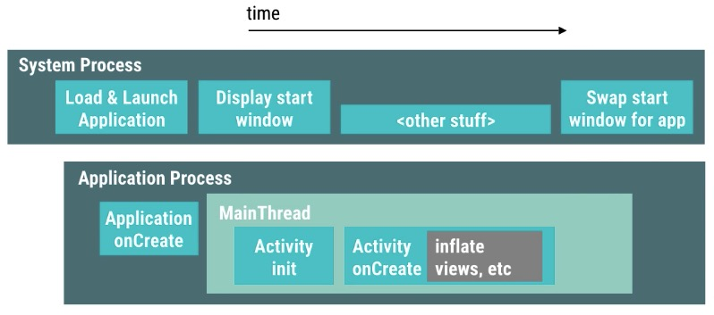

这里是Android性能优化典范第6季的课程学习笔记，从被@知会到有连载更新，这篇学习笔记就一直被惦记着，现在学习记录分享一下，请多多指教包涵！这次一共才6个小段落，涉及的内容主要有：程序启动时间性能优化的三个方面：优化activity的创建过程，优化application对象的启动过程，正确使用启动显屏达到优化程序启动性能的目的。另外还介绍了减少安装包大小的checklist以及如何使用VectorDrawable来减少安装包的大小。
1）App Launch time 101
提高程序的启动速度意义重大，很显然，启动时间越短，用户才越有耐心等待打开这个APP进行使用，反之启动时间越长，用户则越有可能来不及等到APP打开就已经切换到其他APP了。程序启动过程中的那些复杂错误的操作很可能导致严重的性能问题。Android系统会根据用户的操作行为调整程序的显示策略，用来提高程序的显示性能。例如，一旦用户点击桌面图标，Android系统会立即显示一个启动窗口，这个窗口会一直保持显示直到画面中的元素成功加载并绘制完第一帧。这种行为常见于程序的冷启动，或者程序的热启动场景（程序从后台被唤起或者从其他APP界面切换回来）。那么关键的问题是，用户很可能会因为从启动窗口到显示画面的过程耗时过长而感到厌烦，从而导致用户没有来得及等程序启动完毕就切换到其他APP了。更严重的是，如果启动时间过长，可能导致程序出现ANR。我们应该避免出现这两种糟糕的情况。
从技术角度来说，当用户点击桌面图标开始，系统会立即为这个APP创建独立的专属进程，然后显示启动窗口，直到APP在自己的进程里面完成了程序的创建以及主线程完成了Activity的初始化显示操作，再然后系统进程就会把启动窗口替换成APP的显示窗口。
